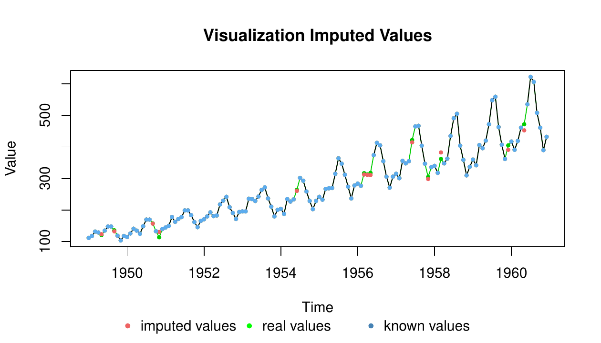
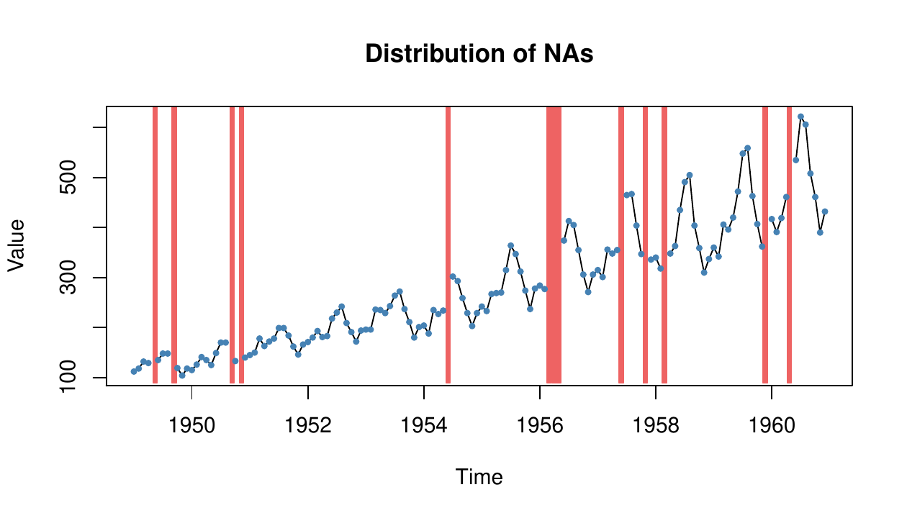
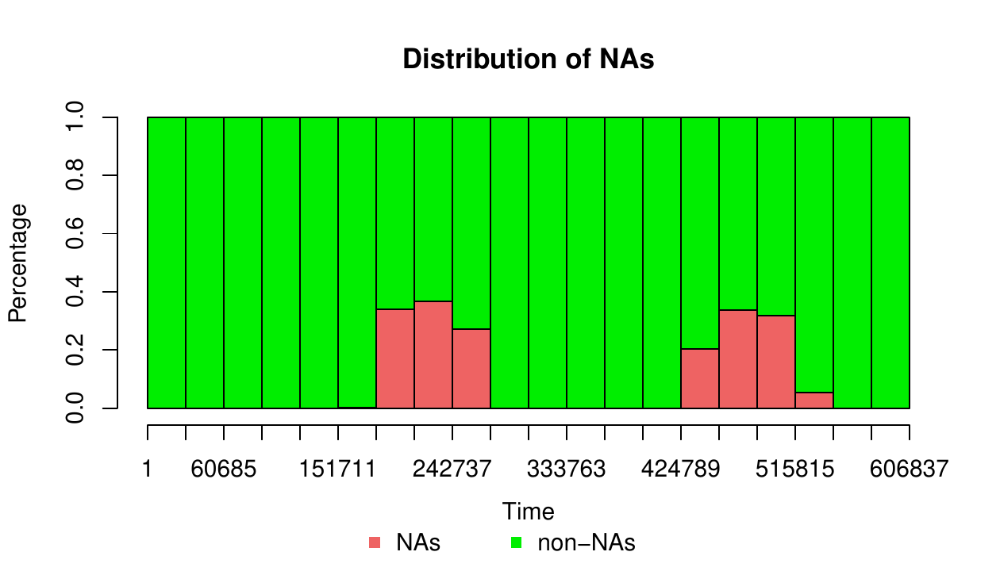
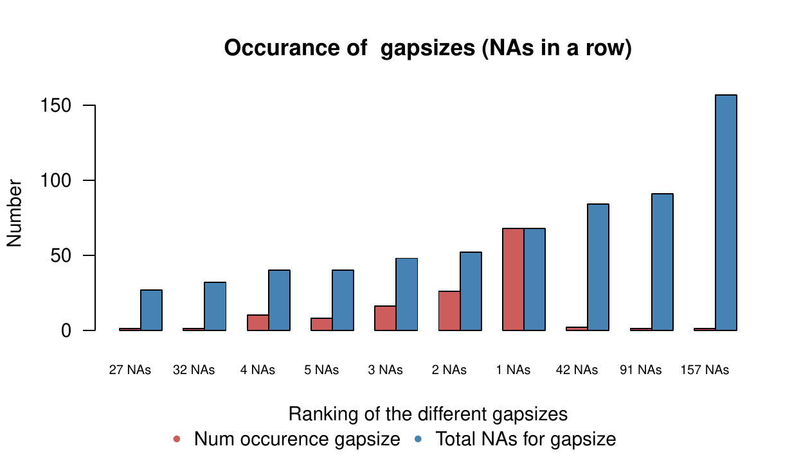
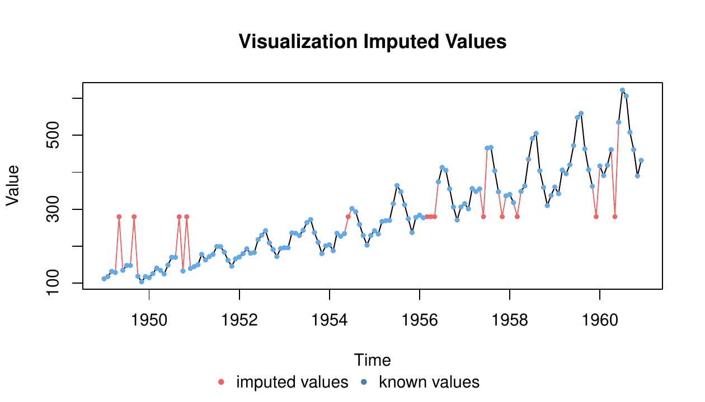
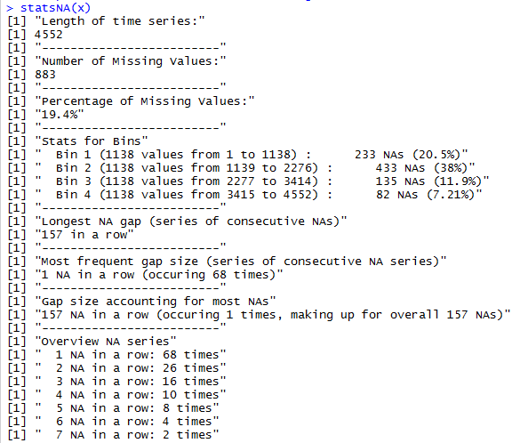
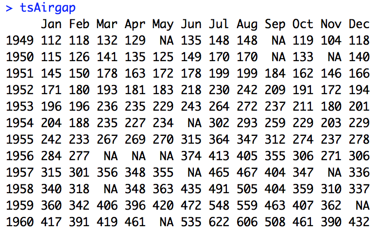

单变量时间序列插补的算法、绘图与统计工具 —— 全文中文译本
imputeTS 包专注于单变量（univariate）时间序列的缺失值填补。它提供了多种前沿填补算法的实现，并配套用于展示时间序列缺失数据统计特征的绘图函数。总的来说，缺失值填补是一个广为人知、也被众多 R 包充分覆盖的问题；然而，要找到能够为单变量时间序列填补缺失值的包却并不容易。其根本原因在于：大多数填补算法依赖的是变量之间（属性间）的相关性，而单变量时间序列的填补必须转而利用时间维度上的依赖关系。本文对 imputeTS 包及其提供的算法与工具作入门介绍，并简要梳理了 R 中单变量时间序列填补的整体图景。
从工业领域（Billinton 等，1996）到生物学（Bar-Joseph 等，2003）、金融学（Taylor，2007）乃至社会科学（Gottman，1981），几乎所有领域都在测量各式各样的时间序列数据。虽然记录下来的数据本身千差万别，但有一个共同的问题是缺失值。许多分析方法都要求事先把缺失值替换成合理的取值。在统计学中，这个替换缺失值的过程被称为填补（imputation）。
时间序列填补由此成为填补研究领域中一个特殊的子领域。多数主流技术——如多重填补（Multiple Imputation，Rubin，1987）、期望最大化算法（Expectation-Maximization，Dempster 等，1977）、最近邻（Nearest Neighbor，Vacek 与 Ashikaga，1980）以及热卡填补（Hot Deck，Ford，1983）——都依赖属性间的相关性来估计缺失值。由于单变量时间序列只含有一个属性，这些算法无法直接使用。有效的单变量时间序列填补算法必须转而利用时间维度上的相关性。
CRAN 上有若干包致力于解决多变量数据的填补问题，其中较为流行和成熟的（但不限于）包括 AMELIA（Honaker 等，2011）、mice（van Buuren 与 Groothuis-Oudshoorn，2011）、VIM（Kowarik 与 Templ，2016）以及 missMDA（Josse 与 Husson，2016）。然而，由于这些包仅为多变量数据填补而设计，它们对单变量时间序列并不适用。
目前，imputeTS（Moritz，2017a）是 CRAN 上唯一一个专门面向单变量时间序列填补、并同时包含多种算法的包。当然，也有一些包把填补函数作为核心功能之外的补充，其中最值得一提的是 zoo（Zeileis 与 Grothendieck，2005）和 forecast（Hyndman，2017），这两者同样提供了一些较为高级的时间序列填补函数。此外，spacetime（Pebesma，2012）、timeSeries（Rmetrics Core Team 等，2015）和 xts（Ryan 与 Ulrich，2014）也值得一提，它们包含若干非常简单但运行快速的时序填补方法。关于 R 中可用时间序列填补包的更广泛综述，可参见 Moritz 等（2015）。在本技术报告中，我们还在不同时间序列上评测了若干 R 单变量填补函数的性能。
本文结构如下：第 2 节概览 imputeTS 包所包含的全部功能与函数；第 3 节介绍其中若干函数的使用方法；最后以第 4 节收束全文。
imputeTS 包可直接从 CRAN 获取，是一个易于使用的包，为「单变量、等时间间隔、数值型时间序列」提供了多种实用工具。
所谓单变量，指随着时间推移只观测一个属性，由此得到在连续时间点 t1、t2、t3……tn 上的一列单一观测值 o1、o2、o3……on。等时间间隔指相邻数据点之间的时间增量相等，即 |t1 − t2| = |t2 − t3| = …… = |tn−1 − tn|。数值型指观测值是可以由数字来描述的可度量量。
本节第一部分先给出全部可用函数与数据集的总体概览，随后分别详述包所覆盖的三个领域：「绘图与统计」、「填补」以及「数据集」。关于如何实际应用这些函数和工具，可参见后文第 3 节。
如表 1 所示，除了若干填补算法的实现之外，包内还包含绘图函数和数据集。填补算法可以划分为两类：一类像均值填补那样较为简单、运行快速；另一类则像基于结构模型的卡尔曼平滑那样较为高级、需要更长的计算时间。
| 简单填补 | 填补 | 绘图与统计 | 数据集 |
|---|---|---|---|
| na.locf | na.interpolation | plotNA.distribution | tsAirgap |
| na.mean | na.kalman | plotNA.distributionBar | tsAirgapComplete |
| na.random | na.ma | plotNA.gapsize | tsHeating |
| na.replace | na.seadec | plotNA.imputations | tsHeatingComplete |
| na.remove | na.seasplit | statsNA | tsNH4 |
| tsNH4Complete |
表 1：imputeTS 包的函数与数据集总览（各列名依次为：简单填补函数、高级填补函数、绘图与统计函数、数据集）
整体而言，该包旨在支持用户完成「替换时间序列中缺失值」的完整流程。这一流程始于使用 statsNA 函数以及 plotNA.distribution、plotNA.distributionBar、plotNA.gapsize 绘图来分析缺失值的分布；随后，可以选择若干算法之一来执行实际填补；最后，用 plotNA.imputations 函数把填补结果可视化。此外，包内含三个数据集，每个都同时提供带缺失值和不带缺失值两个版本，可用于检验填补算法。
可用绘图与统计函数的总览见表 2。若想直观了解这些图的样子，建议阅读第 3 节。
| 函数 | 说明 |
|---|---|
| plotNA.distribution | 可视化缺失值的分布 |
| plotNA.distributionBar | 以条形图可视化缺失值的分布 |
| plotNA.gapsize | 可视化缺失值连续段（gap）长度的分布 |
| plotNA.imputations | 可视化被填补的值 |
| statsNA | 输出缺失数据的统计摘要 |
表 2：绘图与统计函数
statsNA 函数针对输入数据计算若干缺失数据统计量，包括：缺失值的总体百分比、缺失值的绝对数量、数据不同区段中的缺失值数量、最长的连续 NA 串，以及连续 NA 的出现情况。plotNA.distribution 函数通过标准时间序列图可视化 NA 的分布，把存在缺失数据的区段涂成红色，使用户一眼就能看出序列中大部分缺失值所处的位置。plotNA.distributionBar 为用户提供同样的洞察，但其设计面向超长时间序列——当序列达到 1000 个甚至更多观测值时，要把每个观测值都画成一个点已不可能，这时就需要该函数。plotNA.gapsize 函数通过展示序列中最常见的 NA 连续段长度，提供关于连续 NA 的信息。plotNA.imputations 函数则用于在施加某种填补算法之后对结果进行目视检查，因此新填补出来的观测值会以不同于序列其余部分的颜色呈现。
全部可用填补算法的总览见表 3。尽管这些函数极易上手，后文第 3 节仍给出了若干示例。关于算法理论背景的更详细信息，可参阅 imputeTS 手册（Moritz，2017b）。
| 函数 | 选项 | 说明 |
|---|---|---|
| na.interpolation | ||
| linear | 线性插值填补 | |
| spline | 样条插值填补 | |
| stine | Stineman 插值填补 | |
| na.kalman | ||
| StructTS | 基于结构模型与卡尔曼平滑的填补 | |
| auto.arima | 基于 ARIMA 状态空间表示与卡尔曼平滑的填补 | |
| na.locf | ||
| locf | 以上一次观测值向后结转（Last Observation Carried Forward）填补 | |
| nocb | 以下一次观测值向前回填（Next Observation Carried Backward）填补 | |
| na.ma | ||
| simple | 简单移动平均缺失值填补 | |
| linear | 线性加权移动平均缺失值填补 | |
| exponential | 指数加权移动平均缺失值填补 | |
| na.mean | ||
| mean | 均值填补 | |
| median | 中位数填补 | |
| mode | 众数填补 | |
| na.random | 随机抽样填补 | |
| na.replace | 以指定值替换缺失值 | |
| na.seadec | 季节分解式缺失值填补 | |
| na.seasplit | 季节拆分式缺失值填补 | |
| na.remove | 删除缺失值 |
表 3：填补算法一览（相似算法以同一函数的参数选项提供）
为方便起见，相似的算法被统一在同一函数名下作为参数选项提供。例如，线性插值、样条插值和 Stineman 插值都包含在 na.interpolation 函数中。na.mean、na.locf、na.replace、na.random 这几个函数都属于简单且快速的类别；相比之下，na.interpolation、na.kalman、na.ma、na.seasplit、na.seadec 是更高级、需要更长计算时间的算法。na.remove 是一个特例，它只是把所有缺失值删掉，因而严格来说并不是填补函数，使用时需谨慎——删除观测可能破坏序列的时间信息。na.seasplit 与 na.seadec 同样属于例外：它们把季节性拆分／分解作为预处理步骤，至于真正的填补，则可以选用其余填补算法之一（具体用哪一个可通过选项设定）。
纵览全部可用填补方法，很难指出哪一种是全局最优。填补效果始终高度依赖于输入时间序列本身的特性，有时甚至用均值填补也堪称恰当。对于季节性很强的时间序列，通常 na.kalman 与 na.seadec／na.seasplit 表现最好。一般而言，对大多数时间序列来说，na.kalman、na.interpolation 与 na.seadec 三者之一会给出最优结果；而 na.random、na.mean、na.locf 在多数输入序列上的准确度则处于下游。
如表 4 所示，三个数据集都同时提供了带缺失值版本和完整版本。这些时间序列被定位为单变量时间序列填补的基准数据集，目的是让用户能够快速比较和检验填补算法。没有这些数据集，检验时间序列填补算法将需要人工删去某些观测值；有了基准数据，这一过程就被简化了：填补算法可以直接施加于带缺失值的数据版本，随后再与完整版本进行比较。由于这些时间序列是被明确指定好的，研究者可以用它们来横向比较各自的算法。
在这些数据集上跑出的 RMSE 或 MAPE 数值，是引用与比较时容易理解的结果。不过，用这些固定数据集比较算法，只能作为「算法大体表现如何」的第一层指示。尤其对于非常短的 tsAirgap 序列（其中只有 13 个 NA 值），偶然的幸运猜测会明显影响结果。一个完整的基准评测至少应当涵盖：不同的缺失数据比例、不同的数据集、以及缺失数据模拟时不同的随机种子。
总体而言，tsAirgap 提供的是一个相对较短的时间序列，tsNH4 规模居中，tsHeating 则为大型时间序列。tsHeating 与 tsNH4 都是传感器数据，而 tsAirgap 属于计数型数据。
| 数据集 | 说明 |
|---|---|
| tsAirgap | 每月航空旅客数时间序列（含 NA） |
| tsAirgapComplete | 每月航空旅客数时间序列（完整版） |
| tsHeating | 供热系统供水温度时间序列（含 NA） |
| tsHeatingComplete | 供热系统供水温度时间序列（完整版） |
| tsNH4 | 污水系统中铵（NH4）浓度时间序列（含 NA） |
| tsNH4Complete | 污水系统中铵（NH4）浓度时间序列（完整版） |
表 4：数据集一览
tsAirgap 时间序列共 144 行，其不完整版本包含 14 个 NA 值。该序列表示 1949 至 1960 年国际航线月度旅客总数，源自 Box 等（2015），是时间序列分析文献中常用的示例。它原先被称为「AirPassengers」或「airpass」，此处更名为「tsAirgap」，以便与完整版序列区分（gap 表示其中被植入了 NA）。其数据特征（强趋势、强季节性）使 tsAirgap 成为时间序列填补的绝佳示例。
如前所述，为便于用该序列比较填补算法的结果，包内提供了两条序列：一条不含缺失值（tsAirgapComplete），可作为真实标签；另一条含 NA（tsAirgap），可在其上施加填补算法。tsNH4 与 tsHeating 的缺失数据是按「同一来源、相似时间序列中观察到的模式」植入的，而 tsAirgap 的缺失观测则是依据一般性的缺失数据模式生成的。
tsNH4 时间序列共 4552 行，其不完整版本包含 883 个 NA 值，代表 2010 年 11 月 30 日 16:10 至 2011 年 1 月 1 日 6:40 期间以 10 分钟为步长测得的污水系统铵浓度。该序列取自遗传与演化计算大会（GECCO）2014 年工业挑战赛的数据集1。
同样如前所述，为比较填补算法结果，这里也提供了两条序列：不含缺失值、可作为真实标签的 tsNH4Complete，以及含 NA、可在其上施加填补算法的 tsNH4。其 NA 出现的模式取自同一序列／同一传感器但更早的一个时间区间，因此是一种非常逼真的缺失数据模式。请注意，由于该序列观测值众多，像 na.kalman 这样较复杂的算法需要相当一段时间才能跑完。
tsHeating 时间序列共 606837 行，其不完整版本包含 57391 个 NA 值，代表 2013 年 11 月 18 日 05:12:00 至 2015 年 1 月 13 日 15:08:00 期间以 1 分钟为步长测得的供热系统供水温度。该序列源自 GECCO 2015 年工业挑战赛2，那是一场关于「恢复供热系统运行数据中缺失信息」的比赛，目标是尽可能准确地填补供热系统传感器数据中的缺失值。
同样如前所述，这里也提供了两条序列：不含缺失值、可作为真实标签的 tsHeatingComplete，以及含 NA、可在其上施加填补算法的 tsHeating。其 NA 是按相似时间序列中发现的模式植入的。请注意，由于这是一个超长序列，在标准硬件上像 na.kalman 这样的复杂算法可能需要长达数天才能跑完。
要开始使用 imputeTS 包，可以从 CRAN 安装稳定版，或从 GitHub 安装开发版（https://github.com/SteffenMoritz/imputeTS）。推荐安装 CRAN 上的稳定版本。
所有填补算法的使用方式都相同。输入必须是数值型时间序列或数值型向量；输出则是输入数据的一个版本，其中全部缺失值都已被填补值替换。下面用一个小例子来演示填补算法的用法（所有填补函数都以 na.「算法名」开头）。为此，我们首先需要构造一个带缺失数据的示例序列。
# Create a short example time series with missing values
x <- ts(c(1, 2, 3, 4, 5, 6, 7, 8, NA, NA, 11, 12))在这条序列上，我们可以施加不同的填补算法。先用 na.mean，它会用均值替换 NA。
# Impute the missing values with na.mean
na.mean(x)[1] 1.0 2.0 3.0 4.0 5.0 6.0 7.0 8.0 5.9 5.9 11.0 12.0大多数函数还带有附加选项，用于提供同类算法中的其他具体实现。下面的例子可以看到，na.mean 也可以用 option="median" 调用，即用中位数替换 NA。
# Impute the missing values with na.mean using option median
na.mean(x, option="median")[1] 1.0 2.0 3.0 4.0 5.0 6.0 7.0 8.0 5.5 5.5 11.0 12.0尽管 na.interpolation 及其他所有填补函数的用法完全一致，产生的结果却可能不同。正如下面所示，对于这条序列，线性插值给出的结果更为合理。
# Impute the missing values with na.interpolation
na.interpolation(x)[1] 1 2 3 4 5 6 7 8 9 10 11 12对于比本例更长、更复杂（带有趋势与季节性）的时间序列，尝试 na.kalman 与 na.seadec 总是一个好主意，因为这两个函数往往能给出最佳结果；它们的调用方式与所有其他填补函数同样简单。
下面是在 tsAirgap（见 2.4 节）序列上应用 na.kalman 函数的示例。如图 1 所示，对于这条同时具有强季节性与强趋势的序列，na.kalman 给出了相当不错的结果。
# Impute the missing values with na.kalman
# (tsAirgap is an example time series provided by the imputeTS package)
imp <- na.kalman(tsAirgap)
# Code for visualization
plotNA.imputations(tsAirgap, x.imp, tsAirgapComplete)
该函数可视化缺失值在整条时间序列中的分布。做法是绘制出时间序列，并在某个取值为 NA 的位置把背景涂成不同颜色，由此让人一眼看出序列中哪些位置集中出现了缺失值。函数用法示例如下（对应的图见图 2）。
# Example Code 'plotNA.distribution'
# (tsAirgap is an example time series provided by the imputeTS package)
# Visualize the missing values in this time series
plotNA.distribution(tsAirgap)
如图 2 所示，存在缺失数据的区域背景被涂成红色，整张图基本上一目了然。该绘图函数本身不需要额外配置参数，但也允许通过 ... 向底层绘图函数透传参数。
该函数同样可视化缺失值在时间序列中的分布，只是以条形图的形式呈现——当时间序列大到不适合逐个点绘制时，这种方式格外有用。它把多个观测值按时间区间分组，并用条形表示；对于这些区间，图中展示缺失值数量的信息。函数用法示例如下（对应的图见图 3）。
# Example Code 'plotNA.distributionBar'
# (tsHeating is an example time series provided by the imputeTS package)
# Visualize the missing values in this time series
plotNA.distributionBar(tsHeating, breaks = 20)
从图 3 的 x 轴可以看出，tsHeating 序列包含超过 60 万个观测值，是一条超长时间序列。虽然 tsAirgap 序列（144 个观测值）的缺失值可以像图 2 那样用 plotNA.distribution 可视化，但这一做法对 tsHeating 显然行不通：绘图区域根本没有足够空间容纳 60 万个连续的单点。plotNA.distributionBar 函数解决了这个问题——它把多个观测值归入若干区间；示例中的 breaks 参数设定为使用 20 个区间，这意味着图 3 中每个区间大约代表 3 万个观测值。前五个区间完全是绿色的，表示该范围内没有缺失值，也就是说从第 1 个观测值到第 15 万个观测值之间没有缺失数据。序列中段和末段有若干区间各自约含 40% 的缺失数据，即在这些区间中，3 万个观测值里有 1.2 万个是 NA。总的来说，这张图能对超长时间序列的 NA 分布给出一个漂亮而粗略的概览。
该绘图函数用于可视化不同的 NA 连续段（即「连成一串的 NA」）在时间序列中出现的频繁程度，并把这一信息以排名的方式展示。排名可以按「各类 gap 长度所占的 NA 总数」（出现次数 × gap 长度）排序，也可以单纯按「各类 gap 长度的出现次数」排序。最终的读法是这样的：在时间序列 x 中，连续 3 个 NA 的情况出现次数最多，共 20 次；连续 6 个 NA 排第 2，出现 5 次；连续 2 个 NA 排第 3，出现 3 次。函数用法示例如下（对应的图见图 4）。
# Example Code 'plotNA.gapsize'
# (tsNH4 is an example time series provided by the imputeTS package)
# Visualize the top gap sizes / NAs in a row
plotNA.gapsize(tsNH4)
图 4 这张示例图应当这样读：在 tsNH4 序列中，长度为 157 的 gap 只出现了 1 次，但它贡献了所有 gap 类别中最多的 NA（157 个）；长度为 91 的 gap（即连续 91 个 NA）同样只出现 1 次，贡献了第 2 多的 NA（91 个）；长度为 42 的 gap 在序列中出现了 2 次，因而在 NA 总数上排第 3（84 个）；长度为 1 的 gap（该 NA 前后都没有其他 NA）出现了 68 次，在 NA 总数上排第 4（68 个）。
这张图用于可视化时间序列中被填补出来的值。做法是让填补值（被填满的 NA 段）以不同于其余数值的颜色显示。函数用法如下，输出见图 5。
# Example Code 'plotNA.imputations'
# (tsAirgap is an example time series provided by the imputeTS package)
# Step 1: Perform imputation for x using na.mean
tsAirgap.imp <- na.mean(tsAirgap)
# Step 2: Visualize the imputed values in the time series
plotNA.imputations(tsAirgap, tsAirgap.imp)对图 5 的目视检查表明，填补值（红色）与 tsAirgap 序列的整体形态吻合得并不好。这是因为这里用 na.mean 去填补一条具有强趋势的序列所导致的。该绘图函数能让用户迅速发现填补结果中的这类问题。如果被填补值的真实标签是已知的，还可以把这一信息加进图中。该绘图函数本身不需要额外配置参数，但也允许通过 ... 透传绘图参数。

statsNA 函数输出关于单变量时间序列中缺失值分布的汇总统计量。以下简要解释它所提供的各项信息：
| 输出项 | 含义 |
|---|---|
| Length of time series | 时间序列的观测值个数（含 NA） |
| Number of Missing Values | 时间序列中缺失值的个数 |
| Percentage of Missing Values | 时间序列中缺失值的百分比 |
| Stats for Bins | 按分段（bins）统计的缺失值个数／百分比 |
| Longest NA gap | 序列中最长的连续缺失值串（连成一串的 NA） |
| Most frequent gap size | 序列中出现频次最高的缺失值连续串长度 |
| Gap size accounting for most NAs | 在整个序列中贡献最多缺失值的那一类连续缺失串 |
| Overview NA series | 各类连续缺失值串出现次数的概览（出现 0 次的类别会被略去） |
表 5：statsNA 输出项说明
函数用法如下，输出见图 6。
# Example Code 'statsNA'
# (tsNH4 is an example time series provided by the imputeTS package)
# Print stats about the missing data
statsNA(tsNH4)
数据集的使用无需多言：包加载之后，这些数据即可按其名称直接取用，无需调用 data()。每个数据集都同时提供完整版（不含 NA）和不完整版（含 NA）。
# Example Code to use tsAirgap dataset
library("imputeTS")
tsAirgap
缺失数据对于各类数据而言都是一个非常普遍的问题。然而在单变量时间序列的情形下，大多数标准算法以及 R 包中的既有函数都无法直接套用。本文介绍了 imputeTS 包，它提供了一整套专门针对这一任务量身定制的算法与工具。借助示例时间序列，我们展示了所提供函数的易用性及其优势：无论是简单算法还是更复杂的算法，都可以用同样简洁友好的方式施加。这些功能使 imputeTS 成为时间序列预处理的良好选择——尤其适用于后续那些要求完全没有缺失值的分析步骤。未来版本的研发计划包括增加更多可供选择的时间序列算法选项。
本工作的部分内容是在「IMProvT：用于饮用水供给与配送过程优化的智能测量方法」项目（项目编号 03ET1387A）中完成的，由德意志联邦共和国联邦经济事务与能源部提供支持，谨致谢忱。
AMELIA、mice、VIM、missMDA、imputeTS、zoo、forecast、spacetime、timeSeries、xts
ClinicalTrials、Econometrics、Environmetrics、Finance、MissingData、MixedModels、OfficialStatistics、Psychometrics、Spatial、SpatioTemporal、TimeSeries
1. http://www.spotseven.de/gecco-challenge/gecco-challenge-2014/
2. http://www.spotseven.de/gecco-challenge/gecco-challenge-2015/
以下为原文所列的部分参考文献（保留英文原文形式）；完整文献列表请以原文为准。
依据原文要求，引用本工作请使用：
Moritz & Bartz-Beielstein, "The R Journal: imputeTS: Time Series Missing Value Imputation in R",
The R Journal, 2017@article{RJ-2017-009,
author = {Moritz, Steffen and Bartz-Beielstein, Thomas},
title = {The R Journal: imputeTS: Time Series Missing Value Imputation in R},
journal = {The R Journal},
year = {2017},
note = {https://doi.org/10.32614/RJ-2017-009},
doi = {10.32614/RJ-2017-009},
volume = {9},
issue = {1},
issn = {2073-4859},
pages = {207-218}
}